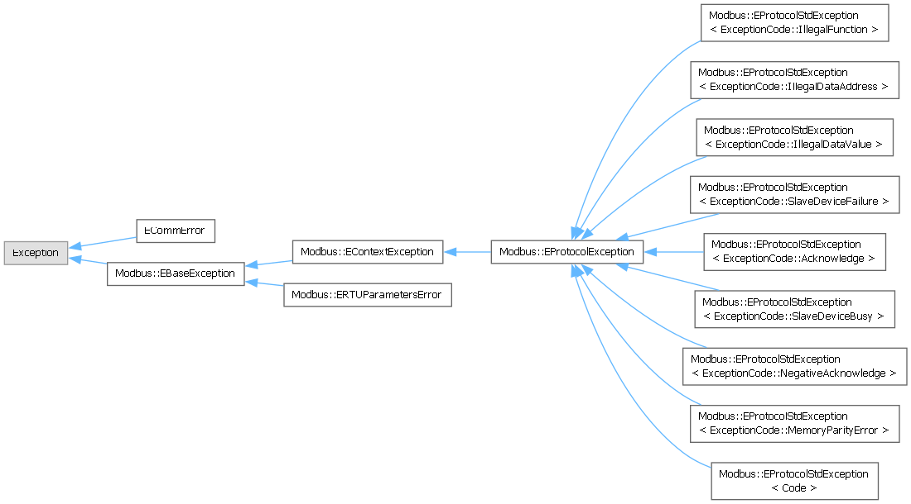
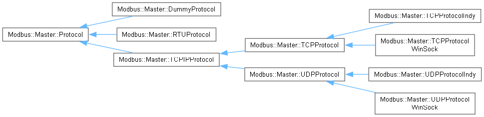

Modbus Library
A C++/VCL Modbus master/server protocol library for Windows
Toggle main menu visibility
Loading...
Searching...
No Matches
Class Hierarchy
Go to the textual class hierarchy


Generated by
1.17.0